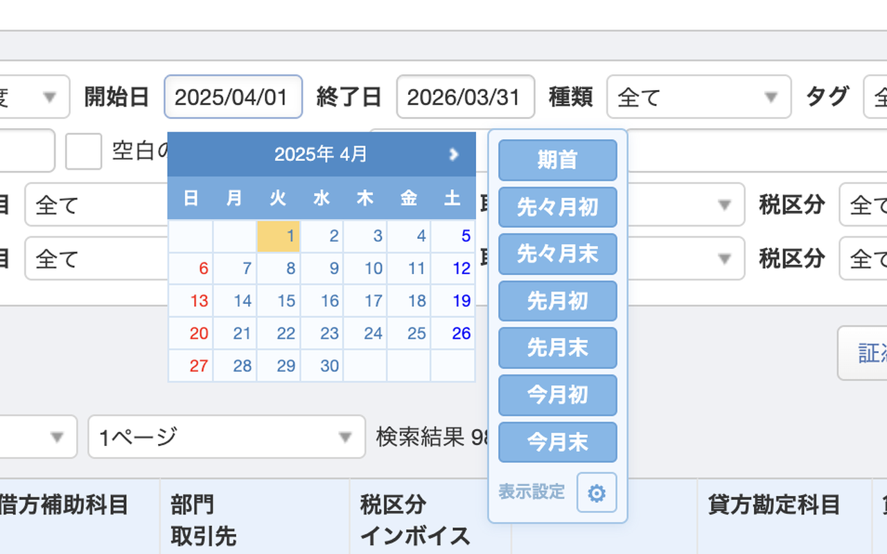
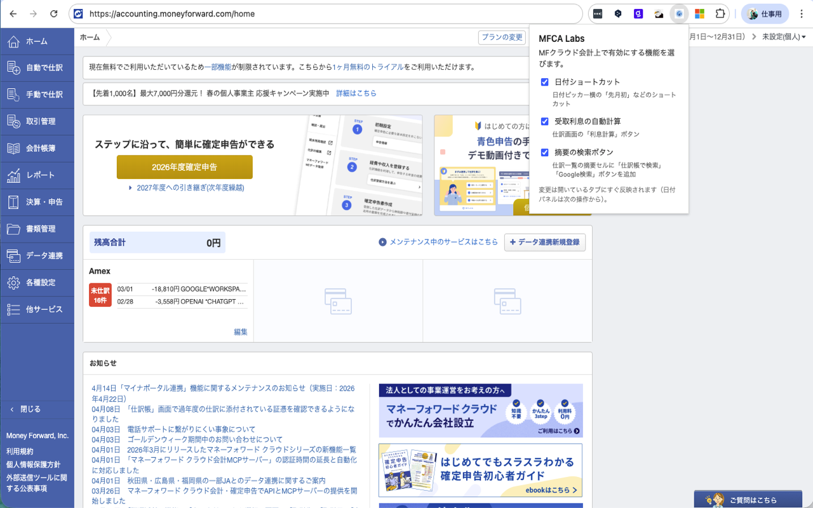
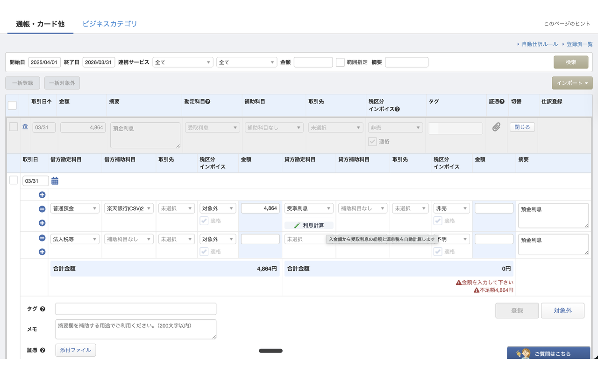
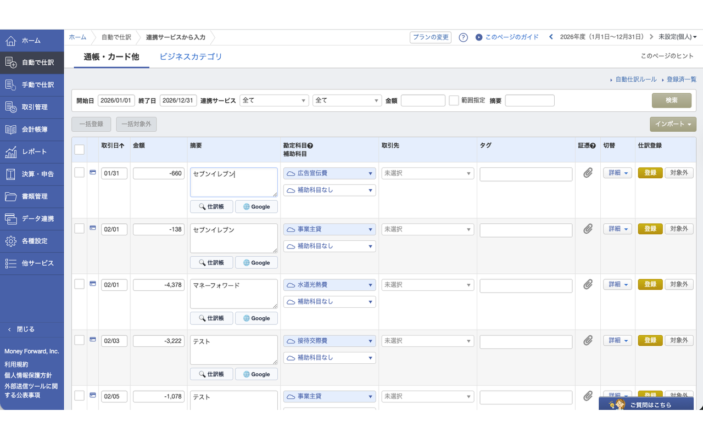
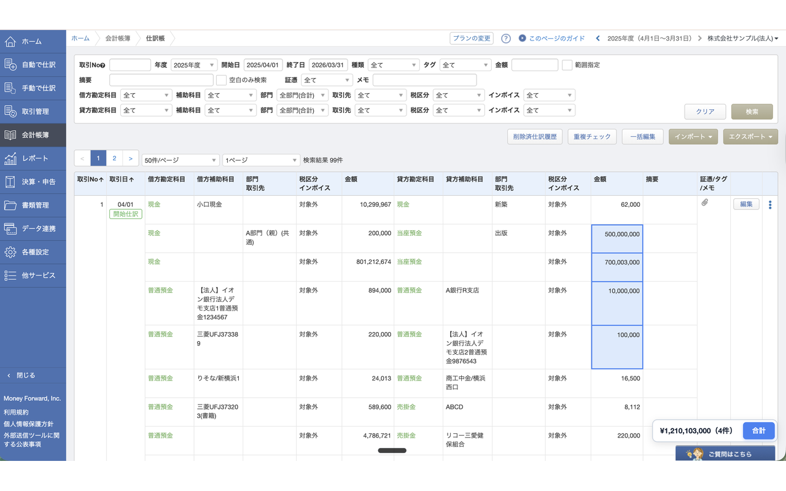
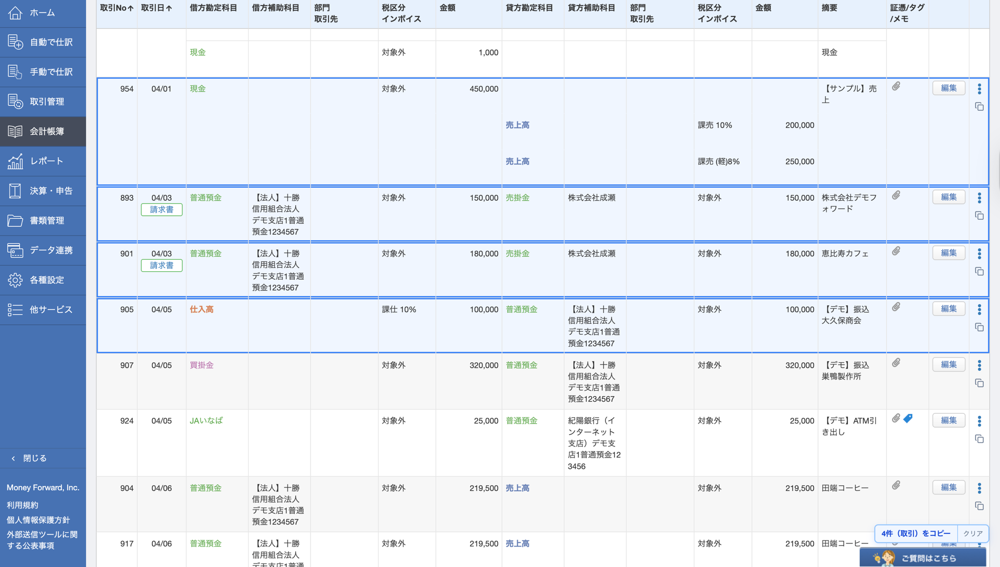
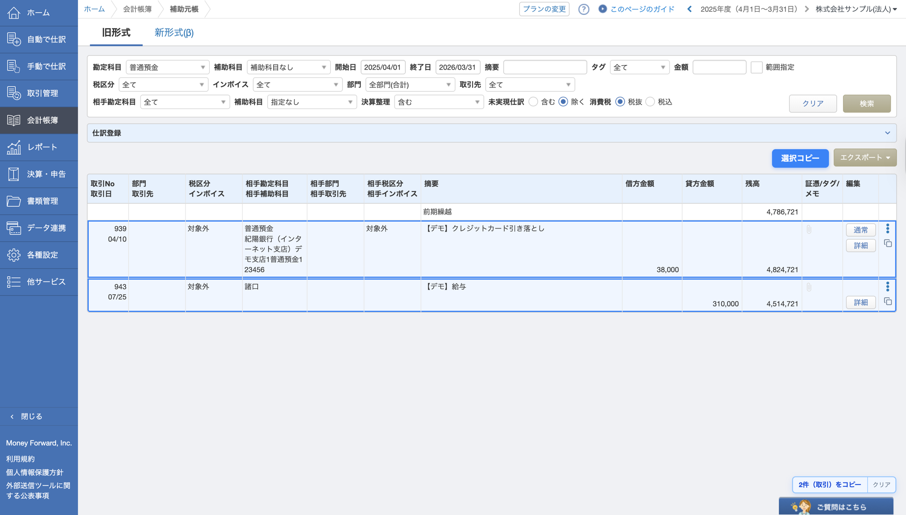

日付ショートカット
日付入力欄のカレンダー付近に 7 つのショートカットボタンが表示されます。クリックするだけで、フォーカス中の日付欄に日付が反映されます。
ボタンは「期首」「先々月初」「先々月末」「先月初」「先月末」「今月初」「今月末」の 7 つです。各ボタンにホバーすると、挿入される日付が MM/DD 形式（例: 04/01）でツールチップに表示されます。歯車アイコンから、表示するボタンを選べます。

非公式 Chrome 拡張機能 ― 株式会社キャシュモ開発
ツールバーの MFCA Labs アイコンをクリックするとポップアップが開き、次の機能をチェックボックスで個別にオン/オフできます。設定は端末内に保存され、開いているタブに即時反映されます。

仕訳の入力・登録の画面で、手入力や計算の手間を減らします。
日付入力欄のカレンダー付近に 7 つのショートカットボタンが表示されます。クリックするだけで、フォーカス中の日付欄に日付が反映されます。
ボタンは「期首」「先々月初」「先々月末」「先月初」「先月末」「今月初」「今月末」の 7 つです。各ボタンにホバーすると、挿入される日付が MM/DD 形式（例: 04/01）でツールチップに表示されます。歯車アイコンから、表示するボタンを選べます。

貸方に「受取利息」を選ぶと「利息を計算」ボタンが表示されます。手取り額から受取利息の総額と源泉所得税を計算して、金額欄へ反映します。摘要は変更しません。
借方の入金額（手取り額）を入力してボタンをクリックすると、受取利息の総額と源泉所得税額を自動計算して金額欄へ反映します。先に単一仕訳で登録した仕訳も、仕訳帳の詳細ボタンから編集して複合仕訳にすれば、その編集行で計算できます。
| 項目 | 計算 |
|---|---|
| 手取り率 | 1 − 15.315% = 0.84685 |
| 受取利息（総額） | 入金額 ÷ 0.84685（切り捨て） |
| 源泉所得税額 | 受取利息総額 − 入金額 |

支払報酬・支払手数料・受取配当金の仕訳で、振込額（手取り額）から総額と源泉税を割り戻して金額欄へ反映します。種類（税率）は選べます。
勘定科目セルの下に、種類を選ぶドロップダウンと「源泉税を計算」ボタンが表示されます。振込額（手取り額）を入力してボタンをクリックすると、総額と源泉税を割り戻して金額欄へ反映します。選んだ種類は勘定科目ごとに記憶されます。ドロップダウン横の「?」にカーソルを合わせると、税率・計算式と今回の計算結果を確認できます。摘要や勘定科目は変更しません。
| 種類 | 対象の勘定科目 | 源泉税 |
|---|---|---|
| 一般の報酬 | 支払報酬・支払手数料 | G ≦ 100万円 → G × 10.21%G > 100万円 → 102,100円 + (G − 100万円) × 20.42% |
| 司法書士等 | 支払報酬・支払手数料 | G ≦ 1万円 → 0円G > 1万円 → (G − 1万円) × 10.21% |
| 上場株式の配当 | 受取配当金 | G × 15.315% |
| 非上場・大口の配当 | 受取配当金 | G × 20.42% |
振込額から総額を割り戻す式は 総額 − 源泉税 = 振込額 です（成り立つ整数の総額が 2 つあるときは大きい方）。
| 科目 | 振込額を読む場所 | 総額 | 源泉税 |
|---|---|---|---|
| 支払報酬・支払手数料 | 貸方1行目 | 借方1行目 | 貸方2行目 |
| 受取配当金 | 借方1行目 | 貸方1行目 | 借方2行目 |
2行目の勘定科目（預り金・法人税等など）は問いません。2行目の金額欄がない場合は、何も反映せずエラーを表示します（司法書士等で源泉税が0円になる場合は、総額のみ反映します）。ポップアップの「源泉税の計算（報酬・配当）」チェックボックスで ON/OFF できます（デフォルト: ON）。
連携サービスから入力の各行の摘要セル付近に「仕訳帳で検索」と「Google 検索」ボタンが表示され、摘要をワンクリックで検索できます。
「仕訳帳で検索」は摘要テキストで絞り込み検索します。「Google 検索」は同じテキストで Google 検索を開きます。
「Google 検索」ボタンを押したときだけ、その摘要が検索語として Google に送信されます。ボタンを押さない限り、送信されません。

元帳や連携サービスの画面で、確認や選択の作業を助けます。
証憑がある行の「証憑 ▶」を押すと、右のパネルに証憑（画像・PDF）が表示されます。ページを左へ押し除けて表示するので、仕訳と見比べながら確認できます。
| キー | 動作 |
|---|---|
| ↑ ↓ | 行の移動（ページ末尾で ↓ を押すと次ページの先頭行、先頭で ↑ を押すと前ページの最後の行） |
| ← → | 証憑の前後（行を選択しているとき） |
| Home End | 最初の行・最後の行 |
| Esc | 選択解除（行を選択しているとき） |
| \ または ¥ | パネルの開閉 |
この機能が ON の間は、元帳画面で ↑↓ と HomeEnd を行の移動に使うため、これらのキーでは画面をスクロールできません。入力欄にフォーカスがあるときや、Ctrl・Cmd・Alt・Shift を併用したときは反応しません。
次の行と月が違う行に「月末」ラベルと太線を表示します。元帳を上から読むときに、月ごとの区切りが一目で分かります。
実際の月末日ではなく、「表示中の並びでその月の最後の行」の目印です。年は見ません。ページ最後の行には付きません。証憑サイドパネルがなくても使えます。ポップアップの「月が変わる行の目印」チェックボックスで ON/OFF できます（デフォルト: ON）。
画面右下の「合計/差分」ボタンで金額選択モードをONにすると、選んだ金額セルの合計または差分がリアルタイムに表示され、ダブルクリックでコピーできます。
通常時はクラウド会計本来の操作感を維持し、ボタンをクリックした時のみ金額選択モードがONになります。モード中に金額セルをクリック/ドラッグすると選択中の合計金額と件数がリアルタイムで表示され、合計の数値をダブルクリックするとクリップボードへコピーされます。Esc を 1 回押すと選択クリア、選択なし状態で Esc を押すとモード終了です。

バッジ内のセグメントコントロール（[合計|差分]）をクリックすると合計⇄差分を切替できます。差分表示では借方基準の符号付き差額（例: 差 +¥600（5件））を表示し、ダブルクリックで差額の絶対値をコピーします。
起点セルをクリック後、Shift+クリックで同列の起点〜終点間を一括選択できます。Ctrl（Mac は Cmd）+クリックで既存の選択を保持したまま個別セルをトグル追加/除外することもできます（Shift+クリックと併存）。
「続きを表示」を自動で展開してから、自動仕訳ルールで勘定科目が割り当てられた行だけをまとめて選択します。
AI推論アイコンのある行・未設定の行・選択できない行は対象外で、既に選択済みの行はそのまま維持されます。選択はボタンを押したときだけ実行され、仕訳の登録・保存は行いません。
展開は最大5回、待機は全体で最大15秒です。上限に達した場合は表示済みの対象行を選択し、続きを手動で表示して再実行するよう案内します。ポップアップの「ルール適用のみチェック」チェックボックスでボタンの表示を ON/OFF できます（デフォルト: ON）。
仕訳や科目リンクを、他のツールや別タブへ持ち出す作業を助けます。
仕訳の内容を、相手勘定つきの整形テキストでコピーできます。コピーアイコンで 1 行ずつ、「仕訳のテキスト化」で複数行をまとめてコピーします。
デフォルトでは MF クラウド会計本来の操作感をそのまま維持し、明示的なトリガー（コピーアイコン・仕訳のテキスト化トグル）を操作したときのみ有効になります。


各行の⋮（メニュー）付近に表示されるコピーアイコンをクリックすると、その行の仕訳内容をクリップボードへコピーします。コピー後はアイコンが「✓」に変わり、2秒後に自動復帰します。
上部の「仕訳のテキスト化」トグルをONにするとモードが起動します。行をクリックして選択（Shift+クリックで範囲選択も可能）し、右下バッジの2つのボタンで形式を選択してコピーします。複合仕訳グループもグループ単位で正しく処理されます。Esc を押すと選択クリア、選択なし状態でもう一度 Esc を押すとモードを終了します。
連携サービスから入力・総勘定元帳・補助元帳では、複数行を選択すると右下バッジの上に「まとめ方」の選択肢が表示されます。「入金・出金ごと」を選ぶと、同じ科目・同じ補助科目（連携サービスでは同じ口座）の括りを保ったまま、その中を入金と出金に分け、見出し付きの明細をコピーします（連携サービスでは金額のプラスを入金、マイナスを出金として分けます）。既定は「通常」で、1行コピーには適用されません。選んだまとめ方は同じタブ内で保持され、ページを再読み込みすると「通常」に戻ります。
YYYY/MM/DD 相手勘定 摘要 金額 出金/入金YYYY/MM/DD 借方科目／貸方科目 摘要 金額YYYY/MM/DD 金融機関 摘要 金額 出金/入金金額は円単位付きで出力されます。
ポップアップの「仕訳Noをコピーに含める」チェックボックスをONにすると、コピー出力の日付の直後に仕訳番号が 仕訳No4942 の形式で挿入されます。仕訳帳・総勘定元帳・補助元帳・振替伝票の4画面に対応しています（仕訳一覧は対象外）。デフォルトはOFFです。
試算表で Cmd（Mac）/ Ctrl（Win/Linux）を押しながら左ドラッグすると、範囲内の科目リンクをまとめて新しいタブで開きます。
修飾キー（Cmd/Ctrl）なしの通常クリック・テキスト選択・通常ドラッグには一切影響せず、MF クラウド会計本来の操作感を維持します。開くのは MF クラウド会計内のリンクだけで、他のサイトへのリンクは対象外です。
ドラッグ中は半透明の青系矩形オーバーレイが表示され、範囲内に入ったリンク（<a href>）がリアルタイムでハイライトされます。矩形の右下には選択件数バッジ（「N 件」）が表示されます。ドラッグを完了してボタンを離した瞬間に、選択されたすべてのリンクがまとめて新しいタブで開きます（ドラッグ中に順次開くのではなく、リリース時に一括オープン）。
10 件を超えるリンクが範囲に含まれる場合は、件数を伝える確認ダイアログを表示してから一括オープンします。ポップアップの「科目リンクの一括オープン（ドラッグ選択）」チェックボックスで ON/OFF を切り替えられます（デフォルト: ON）。
本ツールは株式会社キャシュモが開発したもので、マネーフォワード（MF）社の公式サービスではありません。将来的にMF本体への機能統合を検討する可能性はありますが、現時点では外部ツールとしての提供となります。
本リリースの際、MF社のCISO室による技術的な確認を受けているほか、MF社の法務部門からも一定の条件（免責事項等）のもとで、外部への公表について了解を得ております。ただし、MF本体の仕様変更に追従できず、予告なく機能が利用できなくなる可能性がある点はあらかじめご了承ください。
利便性の向上を優先するため、今後も随時仕様変更を行ってまいります。その際、過去バージョンとの互換性を維持しない変更や、予告なく提供を停止する可能性もございます。継続的な動作を保証するものではない点をご理解の上、ご活用いただければと思います。